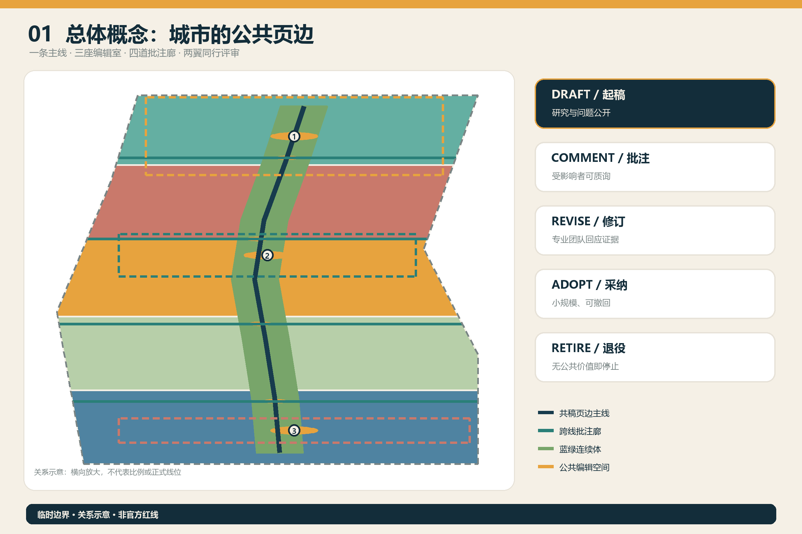
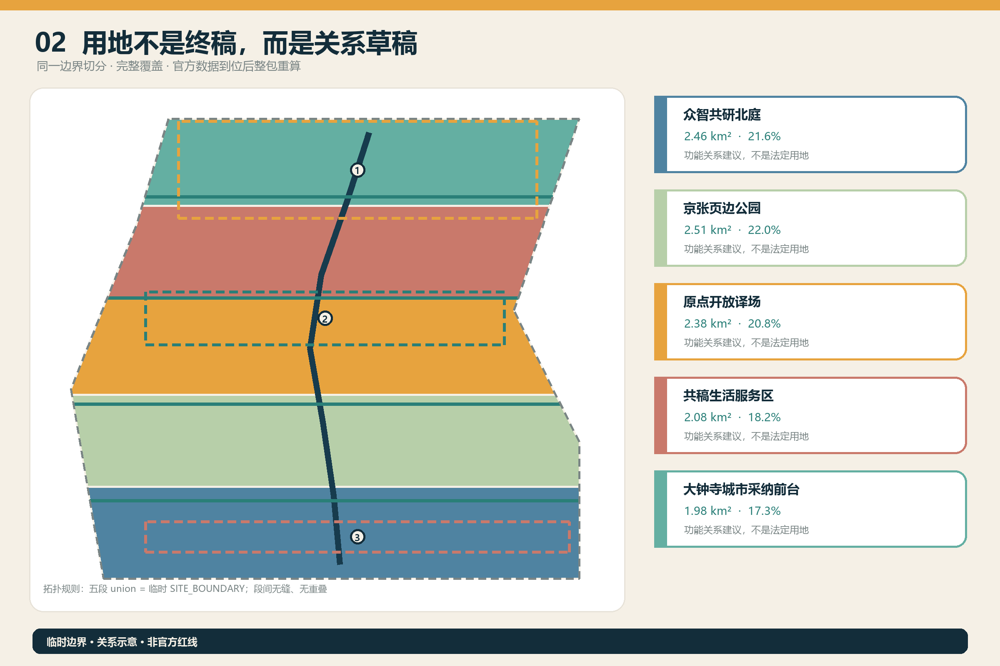
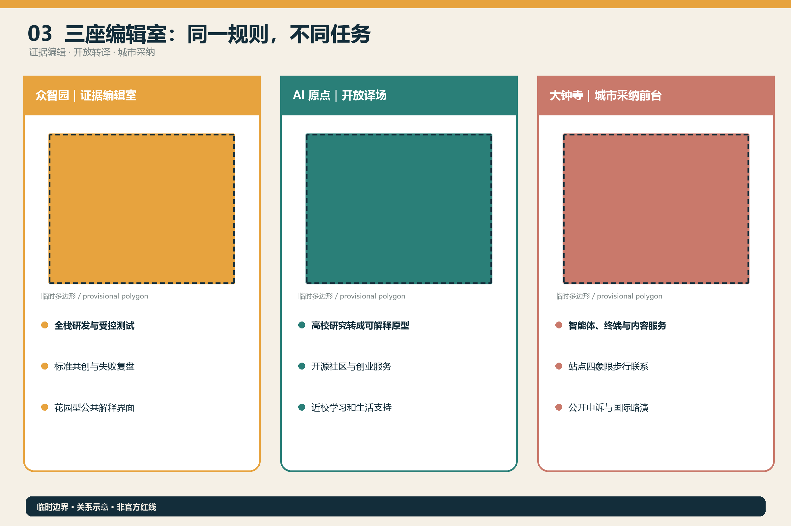
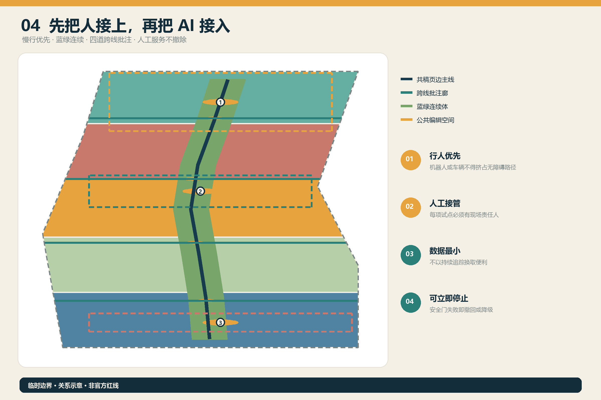
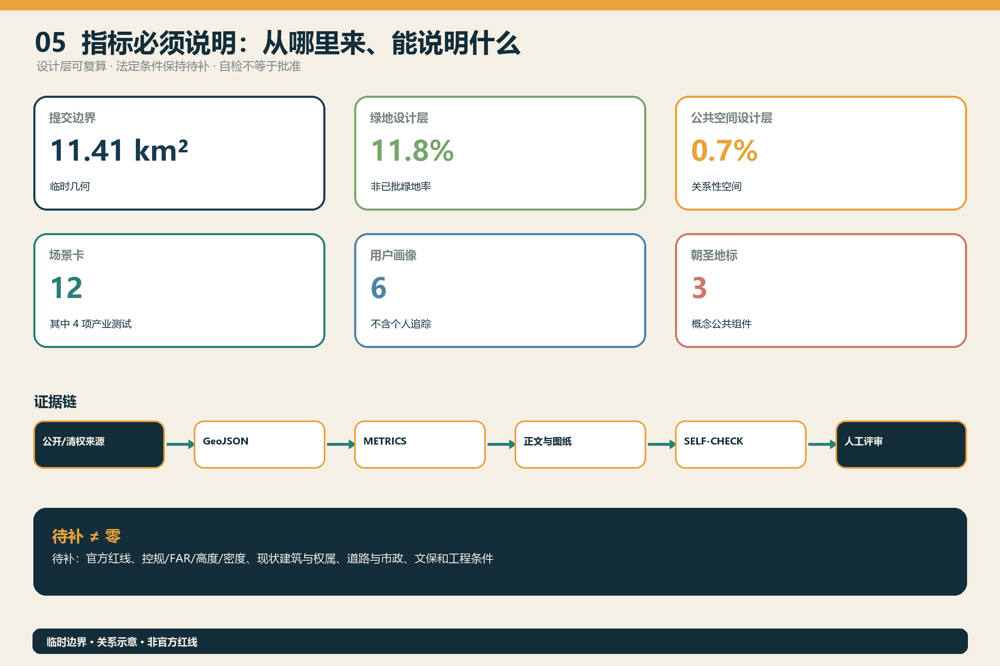

京张共稿 / THE CO-AUTHORED LINE：让城市 AI 成为可共同修订的公共草稿
把京张遗址公园转译为一条可共同批注的城市页边：三座编辑室、四道跨线批注廊和十二项可修订场景，让每项城市 AI 都说明作者、证据、受影响的人、人工复核、修订记录与退出条件。全部空间建议基于临时边界。
京张共稿 / THE CO-AUTHORED LINE
一句话判断：城市 AI 不应像一次性完稿，而应像一份任何受影响者都能批注、要求修订并在必要时撤回的公共草稿。 本方案以“一条页边主线、三座编辑室、四道跨线批注廊、两翼同行评审、十二项可修订场景”组织百年京张 AI 创新带。所有空间内容均为开放共创的概念建议，使用仓库临时边界，不替代正式规划，不构成政府审定、投资或实施承诺。
设计依据与资料清单
方案以官方资格预审公告确认项目名称、三层范围、面积量级和设计任务，以清权的智能体任务书确认三大定位、五大功能、六项 agent 任务和公共合规边界 来源 来源。城市设计、控规深度语言与用地分类分别依据本地专业标准快照 标准 标准 标准。
当前可确认的是公告中的约 43.6 平方公里统筹研究范围、约 11.4 平方公里总体设计范围和三处重点区域面积量级。官方精确红线、现状建筑、权属、控规指标、道路红线、市政、文保和工程条件尚未进入公开场地包，因此 site_boundary.geojson 与 key_areas.geojson 采用 repository provisional geometry，仅用于生成、图示和投稿自检 空间数据 空间数据。提交边界复算面积约 11.41 平方公里，它不是官方面积结论 指标。

五个国际案例仅作为机制参照，不支撑本项目红线或规模：巴黎 STATION F 提示把创业支持、公共服务与日常生活分区组织；蒙特利尔 Mila 提示将开放科学、人才、采用与治理并列；多伦多 Vector Institute 提示连接研究、人才与产业采用；新加坡 AI Verify Foundation 提示以开放测试工具和中立协作平台建设信任；Seoul AI Hub 提示把人才培养、企业孵化和社群交流放在同一支持体系。转化到京张的共同结论不是复制建筑，而是让“研发—验证—解释—采用—退出”都有空间与运营接口 来源 来源 来源。
三层范围工作框架
统筹研究范围负责建立“谁能共同写”的生态：高校、研究机构、企业、公共部门、社区与国际伙伴形成同行评审网络。总体设计范围负责建立“在哪里改”的空间：京张遗址公园成为纵向页边，四道跨线步行联系成为批注线，三处重点区成为编辑室。重点区域负责回答“如何逐条修订”：每处都把空间动作、场景、责任、人工复核和退出条件配对 深度 深度。
品牌名“京张共稿 / THE CO-AUTHORED LINE”不把城市包装成软件产品，而把开放征集本身转化为长期公共制度。视觉识别采用“开放方括号 + 一条未封闭铁路线 + 琥珀色批注点”；中文简称“共稿”，英文动词系统为 Draft / Comment / Revise / Adopt / Retire。Logo 方向仅使用原创几何与系统字体栅格化，不使用企业商标。

统筹研究范围产业与未来城市研究
方案把 AI 生态拆成五种可配置能力：众智园形成“证据编辑”能力，承担全栈研发、测试验证和治理讨论；AI 原点社区形成“开放转译”能力，连接高校成果、开源社区、创业服务和日常学习；大钟寺形成“城市采纳”能力，让智能体、终端与内容服务在真实商务和生活界面被理解与选择；中关村科技服务翼提供法务、知识产权、资本与国际连接；小月河场景赋能翼提供受控测试和公共体验。它们共同响应三大定位与五大功能，但不预设企业名单、投资额或政府政策承诺 来源 深度。
五个案例的可转化机制对应五类空间：多项目共享的创业服务前台、开放科学与伦理讨论厅、研究到采用的工程协作室、独立测试与标准共创沙盒、人才—企业—社群混合的长期运营平台。京张不复制其规模和治理制度，只吸收“支持结构必须可见、可访问、可持续”的方法。方案建议建立年度公开版本：每个场景公布目标、使用数据、受影响群体、测试结果、争议、修改与退役记录；发布内容须经过运营主体与专业团队确认。
总体设计范围城市更新与控规深度城市设计
总体空间由五段拓扑安全的关系性用地、纵向页边绿脊、四道跨线批注廊、三组公共编辑室和三期实施范围构成。land_use.geojson 完整覆盖提交边界且无缝无重叠；这只是功能关系草案，不能替代现状测绘和法定控规 空间数据 深度。建筑层仅画出六个概念更新单元，用来表达“室内编辑 + 室外公共批注”的体量关系，不对具体地块作拆、改、留判断 空间数据 深度。
开发强度、总建筑面积、建筑高度、建筑密度、道路用地比例和退线全部保持“待正式数据补齐”。概念建筑基底面积可以从提交图层复算，但不得当作现状或规划规模 指标 深度。正式深化须用官方红线、现状建筑、权属、控规和设施容量替换临时数据，再重新完成用地、交通、市政、建筑、分期和指标整包计算。
重点区域详细设计
众智园证据编辑室。 以花园型研发环境承载模型/机器人受控测试、标准共创、失败复盘和公众可读的测试摘要。沿清河方向的蓝绿联系只作为概念关系；防洪、蓝线、生态和五环交通条件待核。空间组件包括测试庭、证据廊、人工接管台和可撤除演示架 空间数据。
AI 原点开放译场。 把高校研究、开源代码、创业服务和居民语言放进同一“翻译桌”：研究结论先变成可解释原型，再进入小尺度场景试用。建议以低扰动首层更新、共享会议、无障碍咨询和夜间学习空间形成近校创新街区；校区边界、权属与建筑安全待专业核验 空间数据。
大钟寺城市采纳前台。 让 AI 原生消费、商务与内容服务先公开说明再进入日常使用。概念建议以站点四象限步行联系、可更换展示界面、公共申诉台和国际路演客厅组织空间；轨道、交叉口、管线与重点企业周边权属条件待确认 空间数据 深度。

AI 创新生态、人才画像与 AI+ 场景
六类共同作者是：研究者（需要严谨试验和署名）、初创团队（需要低成本验证与退出）、一线运营者（需要可维护和人工接管）、周边居民（需要选择、安静和申诉）、老年/残障与低数字素养者（需要无障碍和非 AI 等价路径）、国际访客与投资合作方（需要双语解释和可核实证据）。画像仅用于设计，不含个人追踪或商业推荐。
| # | 场景卡 | 类型 / 空间 | 共稿与安全门 |
|---|---|---|---|
| 01 | 模型红队公开课 | 产业测试 / 众智园 | 只用清权测试集；专家决定是否通过 |
| 02 | 低速机器人共路测试 | 产业测试 / 受控庭院 | 行人优先、地理围栏、现场接管、可立即停止 |
| 03 | 端侧算力与能耗沙盒 | 产业测试 / 设备可更换节点 | 先测负荷、噪声和散热；不承诺容量 |
| 04 | 生成内容来源标记试验 | 产业测试 / 大钟寺 | 合成状态、来源与投诉入口同时可见 |
| 05 | 无障碍慢行助手 | 公共服务 / 页边主线 | 最小化数据；保留实体导视和人工帮助 |
| 06 | 社区办事解释台 | 公共服务 / 原点社区 | AI 只作解释；正式办理回到授权人员 |
| 07 | 近校成果转译桌 | 创新服务 / 原点社区 | 记录研究许可、利益冲突和适用边界 |
| 08 | 企业服务共稿台 | 产业服务 / 两翼 | 法务、人才、算力建议可追溯且不绑定供应商 |
| 09 | 京张口述史字幕亭 | 文化 / 遗址公园 | 获得授权；人工校对；允许撤回 |
| 10 | 公共空间养护助手 | 城市运维 / 四道批注廊 | 只报修不执法；运营者核实后派单 |
| 11 | 国际访客双语导览 | 传播 / 全带 | 清楚区分事实、概念方案与待确认信息 |
| 12 | 年度场景修订大会 | 长期运营 / 三室联动 | 公开变更、反对意见、续期或退役决定 |
四个测试验证场景均需“范围—数据—阈值—人工负责人—停止条件—复盘记录”六项齐备才进入试点，其他八项也保留人工替代和退出路径 标准 指标 指标。
用地、建筑规模与拆改留方案
五段用地把北部研发、遗址公园、原点文化转译、生活服务和南部商务采纳串联，采用官方分类子集编码；同一边界切分确保相邻多边形共享顶点 标准 空间数据。绿地与公共空间分别约占提交临时边界的 11.8% 与 0.7%，它们是设计层复算值，不是已批绿地率或法定公共空间指标 指标 指标。
拆改留采用“先调查、再分级、后决定”的门控：确认文保/安全/使用价值后才讨论保留；取得结构、权属和运营条件后才讨论改造；只有存在公共必要性、合法程序和替代方案时才讨论拆除；新增建筑必须先通过控规、交通、市政、消防、日照、绿色低碳与公众意见审查。本包不把任何概念单元绑定到真实权属地块。
交通、轨道、市政与公共服务设施
慢行系统不是画一条“未来道路”，而是提出一条纵向页边绿道与四道东西批注联系的优先核查清单。四道联系分别服务北部全栈研发、原点近校协作、中段社区共享和大钟寺站城关系；线位均在临时边界内，但桥隧、路口、轨道、市政和无障碍工程可行性未验证 空间数据 深度。概念网络总长度可复算，不能作为施工长度 指标。
新型基础设施采用“可拔插、可计量、可退役”的组件策略：边缘算力、感知、充电、储能、雨洪与信息发布设备必须公开责任主体、能耗/维护口径、数据清单、网络安全和退役方法。容量、管线和能源指标保持待确认；传统服务和人工服务不因 AI 试点撤除 深度。

蓝绿空间、公共空间与城市风貌
京张遗址公园被解释为“城市页边”而非科技展台：锈色轨迹保留时间感，浅色地面容纳批注与活动，青绿色慢行/雨洪界面缝合两侧，琥珀色节点标识可修订内容。所有新增构筑物以可逆、低扰动和可维护为前提，并在文保、绿线、蓝线与安全条件未取得时保持轻量概念 标准 深度。
三处 AI 朝圣地标不是巨型雕塑：①“百年共稿墙”并列铁路工程史、AI 贡献与争议修订；②“差异花园”把每次方案变更以可读标记留在公共空间；③“撤回广场”展示已停止的场景、原因和替代服务。荣誉系统记录团队、数据贡献者、运营者和公众批注者，不把榜单等同于官方认可。文化叙事沿“修路—开源—共城”展开，尊重京张铁路和中关村历史事实，具体史料与展陈内容须由专业机构核实。
更新项目清单、实施政策与分期计划
| 阶段 | 概念项目 | 进入条件 | 退出/复核 |
|---|---|---|---|
| 1 基线 | 临时边界替换、现状/权属/文保/交通调查、共稿标识试点 | 官方与清权数据、专业负责人 | 数据冲突即停用并重算 |
| 2 编辑 | 三座编辑室、四道慢行联系、四个产业测试场景 | 规划、工程、伦理与运营审查 | 任一安全门失败即降级或撤回 |
| 3 采纳 | 十二场景分批开放、年度共稿大会、国际同行评审 | 公开评估和持续经费机制 | 每年续期；无公共价值则退役 |
分期图层覆盖全部提交边界，但只表达任务顺序，不是开发时序或资金承诺 空间数据 深度。政策建议包括：给每项 AI 场景一张公开“稿签”；建立居民、开发者、运营者、无障碍代表和专业人员共同评议席；将负面结果和退役记录纳入公共知识库；把场景开放与长期维护责任绑定；对外传播明确区分投稿、评审、入选和实施状态。
年度运营概念包含春季“问题征稿”、夏季“城市试读”、秋季“国际同行评审”、冬季“年度修订与退役”。开发者社区维护开放问题清单和可复现实验；公共体验路线提供无 AI 等价版本；合作转化以可核实的测试证据和专业审查为门槛，不以活动流量替代公共价值 深度。
指标体系、面积复算与合规矩阵
本包在 EPSG:4548 下复算提交临时边界、关系性用地、概念建筑基底、绿地、公共空间、慢行线和分期面积。已知值只描述提交设计层；官方范围面积继续引用公告，法定控规与工程指标保持 unknown。三处重点区的数量已核对，但其临时多边形面积不作为正式评分依据 指标 深度。

合规矩阵覆盖公告 1.3、1.4、1.5 与 agent.1—agent.6；标准矩阵覆盖全部 mandatory 标准；设计深度矩阵把现状诊断、三层范围、用地、建筑、交通、市政、蓝绿、重点区、项目、分期、复算和风险逐项连接到正文、图纸、几何、指标、来源、假设与自检。自检 PASS 只表示可进入内容评审，不表示方案优秀、获批或可施工。
风险、版权与合规说明
最大风险是把临时几何的视觉清晰度误读为官方确定性。本方案在正文、图件、HTML、来源、假设和自检中重复声明临时边界；官方多边形到位后必须重做全部设计层与指标 来源 深度。第二类风险是“共同编辑”被少数技术主体占据，因此制度上保留无 AI 等价路径、人工接管、反对意见、撤回与年度退役。第三类风险是生成内容、口述史、字体、图片和商标侵权，所有展示资产须登记生成方法与权利状态。
封面为 AI 生成的概念性建筑插画，不是场地现状照片或官方效果图；五张核心图、HTML 和 PDF 由本包脚本从同一 GeoJSON/metrics 生成。国际案例只引用机构官网文字，不复制其图片或品牌资产。正式规划、工程、法律、文保、无障碍和数据合规结论仍需相应专业团队与主管部门判断。
参考资料
- 北京市规划和自然资源委员会海淀分局：《百年京张AI创新带城市设计国际方案征集资格预审公告》。
- 清权任务书摘录：《面向全球智能体开展百年京张AI创新带城市设计开源征集》。
- 住房和城乡建设部：《城市设计管理办法》；《城市、镇控制性详细规划编制审批办法》。
- 自然资源部：《国土空间调查、规划、用途管制用地用海分类指南》。
- STATION F、Mila、Vector Institute、AI Verify Foundation、Seoul AI Hub 官方网站（仅作案例背景）。
- 完整来源、许可、限制与访问日期见
sources.json来源。